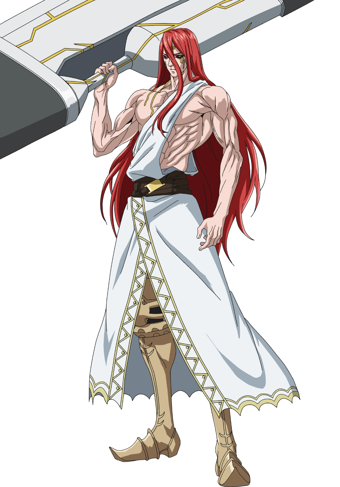
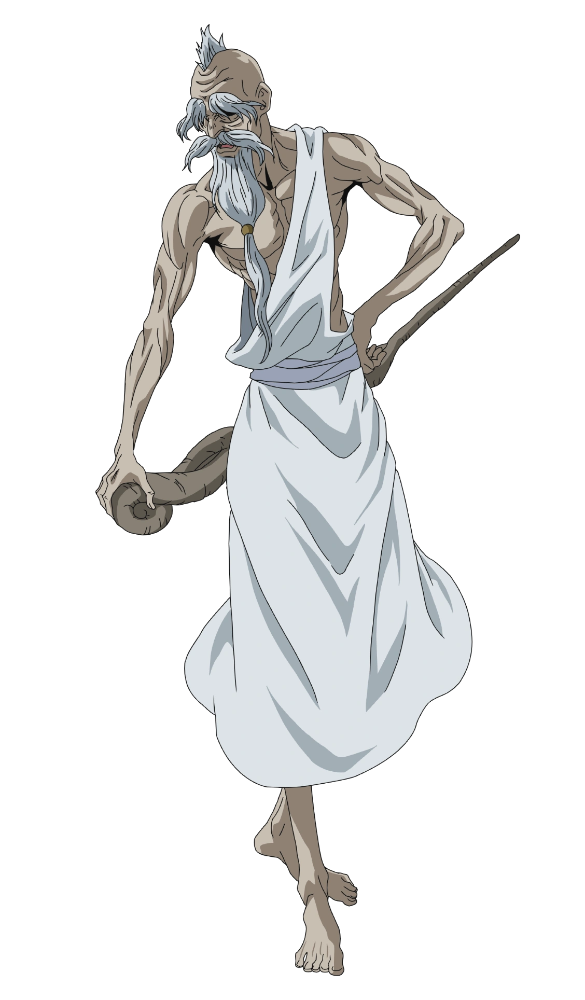
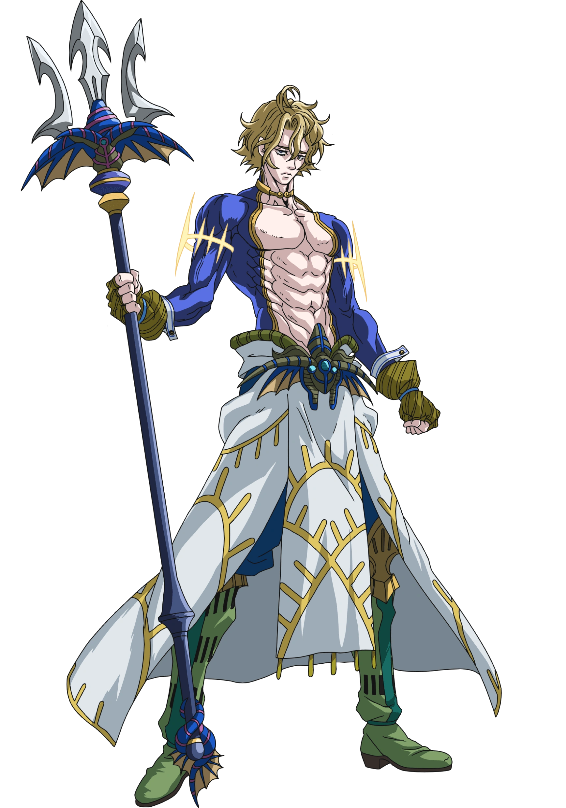
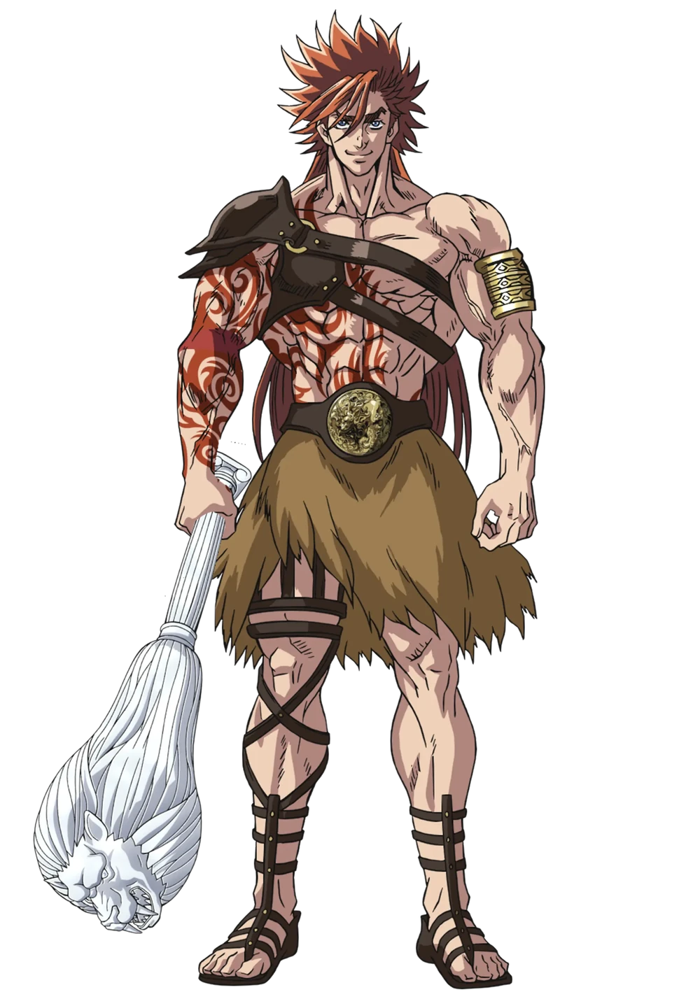
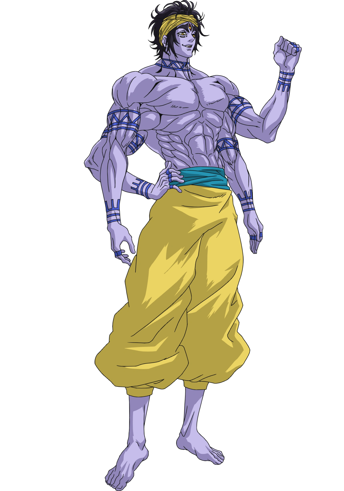
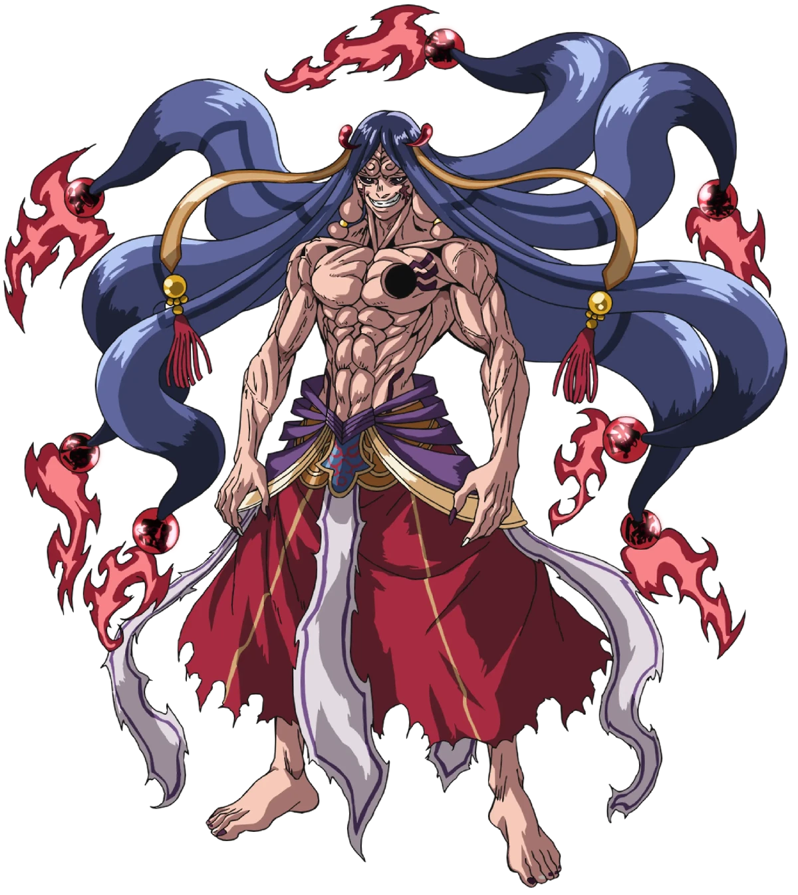
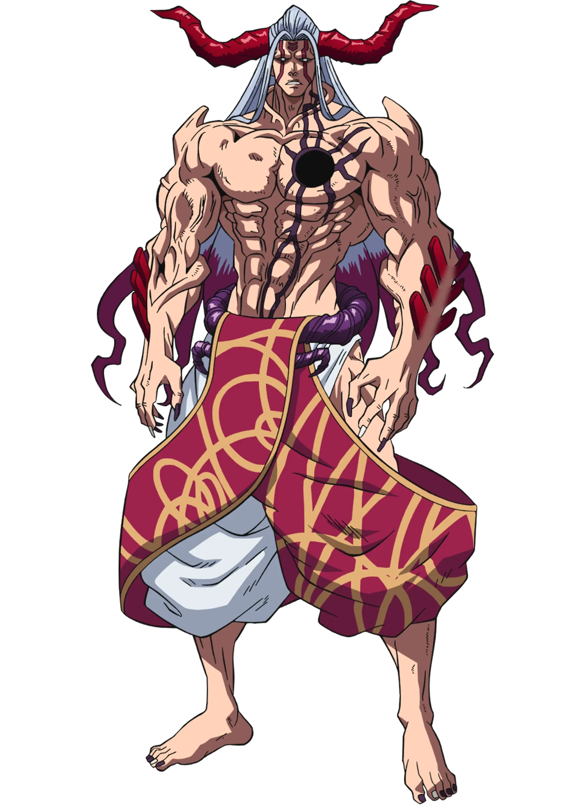

-
Thor
Descrição
Thor é o representante dos Deuses na primeira rodada do Ragnarok, contra Lü Bu. Thor é uma divindade proeminente no Panteão Nórdico, sendo o Deus Nórdico do Trovão, e também é frequentemente considerado o Deus e Guerreiro Mais Forte dos Nórdicos. Ele é conhecido como o "Trovão Berserker" (雷いかずちの狂戦士バーサーカー, Ikazuchi no Bāsākā).
-
Zeus
Descrição
Zeus é o representante dos Deuses na segunda rodada do Ragnarok, indo contra Adão. Zeus é uma divindade proeminente e líder do Panteão Grego. Ele é o presidente do Conselho dos Deuses e o líder dos Lutadores dos Deuses, pois é ele quem escolhe o próximo lutador. Ele também é frequentemente referido como o "Deus Pai do Cosmos" (全宇宙の父ゴッドファーザー・オブ・コスモス, Goddofāzā ofu Kosumosu) ou "GFOC" para abreviar.
-
Poseidon
Descrição
Poseidon é o representante dos Deuses na terceira rodada do Ragnarok, enfrentando Kojiro Sasaki. Ele é uma divindade proeminente no Panteão Grego como o Deus dos Mares. Sem qualquer amor pela Humanidade e com indiferença pela vida, Poseidon é a personificação daquilo que define um Deus. Devido à sua crueldade e enorme poder, ele é chamado de "Deus Mais Temível" (最恐神, Saikyō-shin) e "O Deus dos Deuses" (神の中の神, Kami no naka no Kami, G.O.G) por seus companheiros deuses. Ele governa todos os oceanos com mão de ferro, o que lhe valeu os títulos de "Tirano do Oceano" (大海の暴君タイラントオブオーシャン, Tairanto obu Ōshan) e "Zeus Enalios" (海のゼウスゼウス・エナリオス, Zeusu Enariosu aceso. Zeus dos Mares"); seu irmão mais velho, Hades, também se referiu a ele como o "Rei dos Mares" (海の王, Umi no Ō).
-
Hércules
Descrição
Hércules é o representante dos Deuses na quarta rodada do Ragnarok, enfrentando Jack, o Estripador. Héracles é uma divindade proeminente no Panteão Grego, sendo o Deus da Fortitude (不屈の闘神, Fukutsu no Tōjin). Ele também é um dos poucos seres divinos, junto com Buda e as Valquírias, que não são a favor do fim da Humanidade. Heimdall o descreve como o "Enviado da Justiça" (正義の使者, Seigi no Shisha) tanto para os Deuses quanto para os Humanos. Héracles era anteriormente um humano chamado "Alcides" (アルケイデス, Arukeidesu), vindo da Grécia Antiga e ascendeu à divindade bebendo a Ambrosia.
-
Shiva
Descrição
Shiva é o representante dos Deuses na quinta rodada do Ragnarok, enfrentando Raiden Tameemon. Shiva é uma divindade proeminente e líder do Panteão Hindu. Ele é um Deus Chefe e conhecido como o "Bhairava do Cosmos" (宇宙の破壊神バイラヴァ, Uchū no Bairava), o "Deus mais forte da Destruição" (最強の破壊神, Saikyō no Hakaishin), e o maior lutador do Céu.
-
Zerofuku
Descrição
Zerofuku é o representante dos Deuses na sexta rodada do Ragnarok, indo contra Buda, ocupando o lugar de Bishamonten. Zerofuku é o Deus do Infortúnio. Ele também é a fusão dos Sete Deuses da Sorte, sendo sua forma original antes de se separarem no passado. O nome "Zerofuku" significa "fortuna zero", mas também pode ser interpretado como "infortúnio".
-
Hajun
Descrição
Hajun é o representante dos Deuses na segunda parte da sexta rodada do Ragnarok. Anteriormente o Deus do Infortúnio, Zerofuku, Hajun apareceu quando Zerofuku foi devorado por dois dragões, tomando seu lugar na luta. Hajun também atende pelo título de "Senhor Demônio do Sexto Céu" (第六天魔王, Dairoku Tenmaō) e "Berserker Lendário do Mundo Inferior" (冥界伝説の狂戰士, Meikai Densetsu no Kyōsenshi).